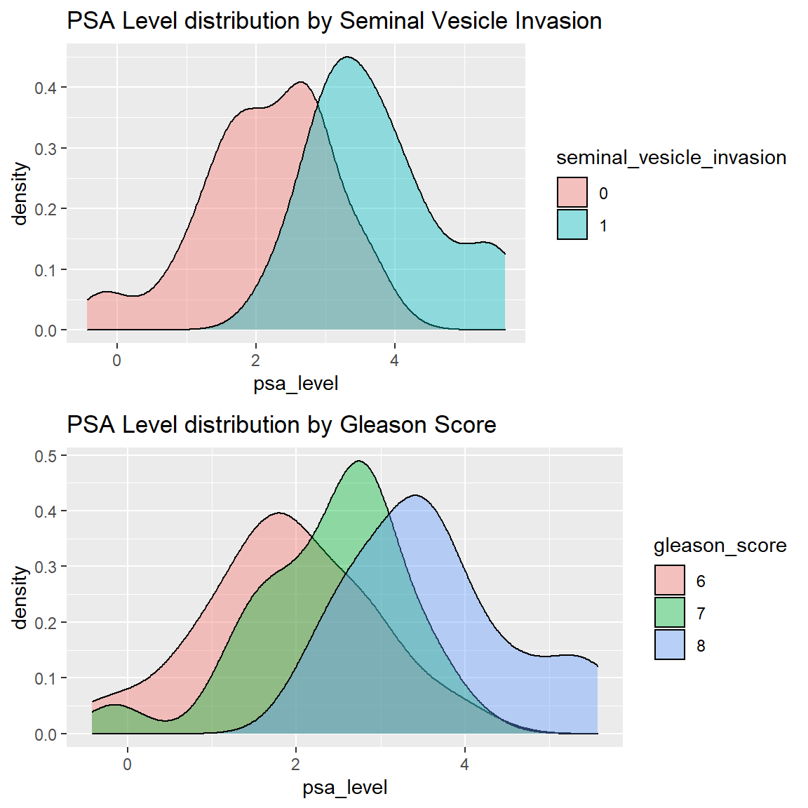
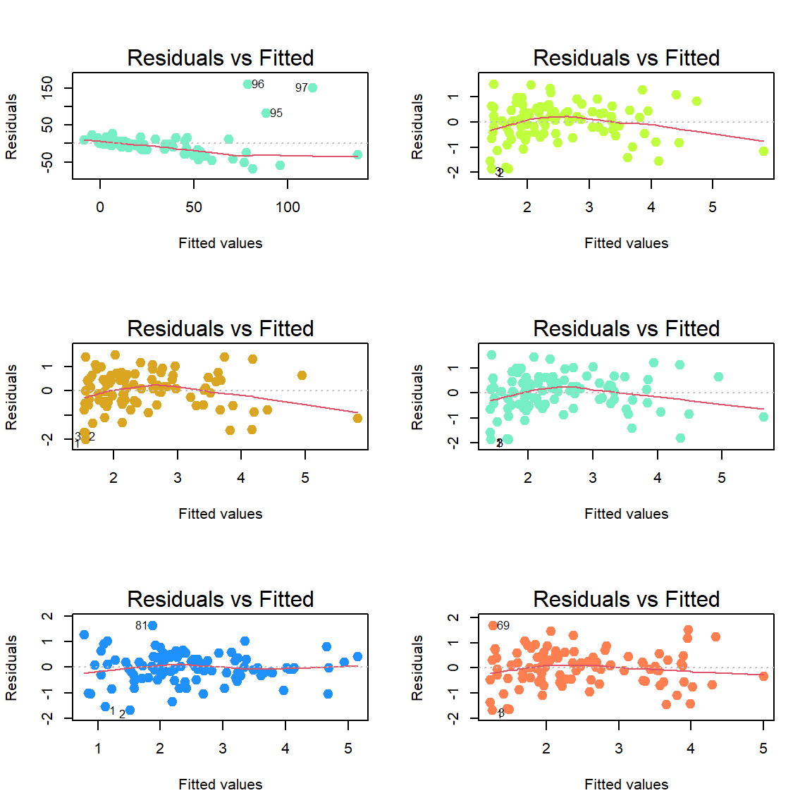
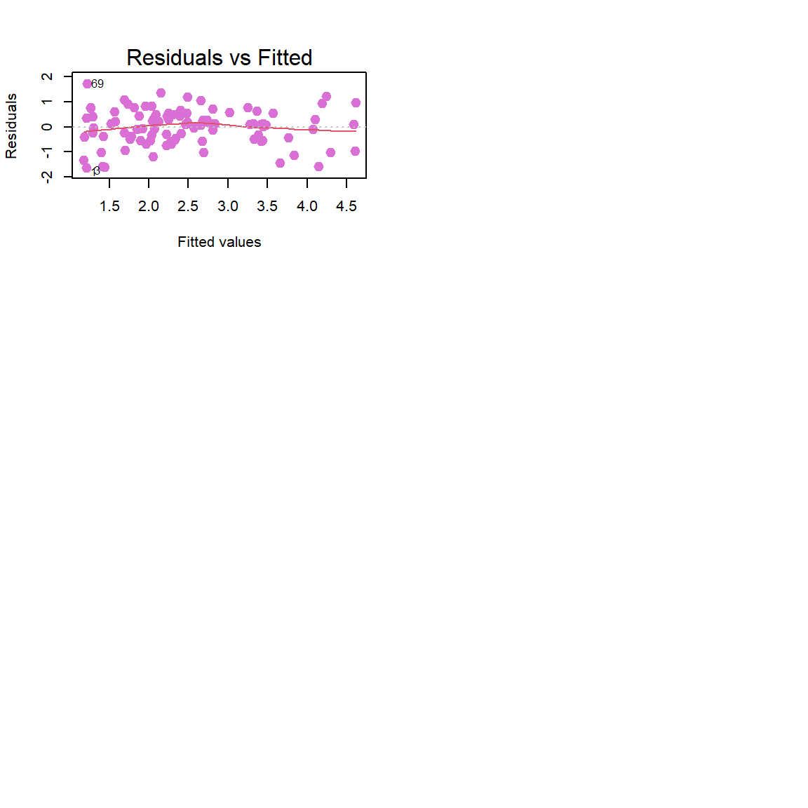
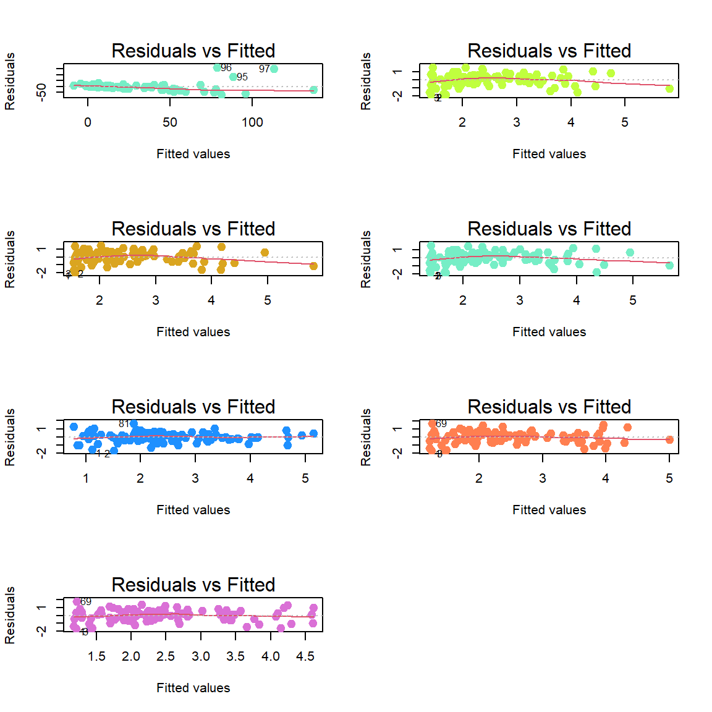
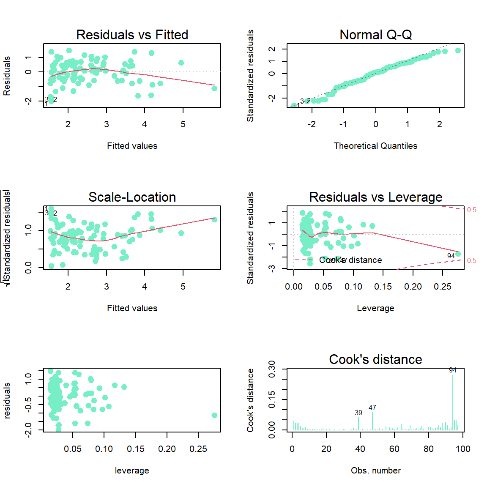

Prostate Cancer
Abstract
The objective of this project is to identify the association between prostate-specific antigen (PSA) and a variety of prognostic clinical measurements in men with advanced prostate cancer. Cancer volume, weight, age, benign prostatic hyperplasia, seminal vesicle invasion, capsular penetration, and gleason score are the set of clinical measurements included in this analysis. A variety of multiple linear regression models were investigated to identify the relationship between PSA and these clinical measurements. Using some of the predictor variables mentioned, a final linear regression model was developed in order to predict the level of PSA among men diagnosed with prostate cancer. The result of the analysis reveals that cancer volume, benign prostatic hyperplasia, and seminal vesicle invasion are useful factors in detecting the PSA level in men with prostate cancer. This analysis uses a dataset collected from men with prostate cancer and does not include any measurements on men who are not diagnosed with prostate cancer.
Introduction
Prostate cancer is one of the most common causes of cancer-related deaths among men. In the US, the American Cancer Society estimates approximately 248,530 new cases and 34,130 deaths from prostate cancer for 2021 (American Cancer Society, 2021). Additionally, there is a high risk of prostate cancer in men. The American Cancer Society estimates that approximately 1 in 8 men will be diagnosed with prostate cancer and 1 in 41 men will die of prostate cancer.
Prostate-specific antigen (PSA), an enzyme produced by the prostate, is commonly recommended as a screening mechanism for detecting prostate cancer. In order to become an efficient screening tool, it is important that we understand how PSA levels relate to factors that may determine prognosis and outcome. However, PSA screening does not always guarantee accurate results. In rare cases, some men with prostate cancer do not have an elevated PSA and some men with high level of PSA do not have prostate cancer. Moreover, PSA levels can change for variety of reasons other than cancer. Some of the other common causes of high PSA levels include benign prostatic hyperplasia (BPH), urinary tract infection (UTI), and prostatitis (prostate inflammation) (Whelan, 2017). Despite this, PSA level detection is still currently one of the most helpful method used in prostate cancer diagnosis.
The data used to analyze the relationship between PSA level and a number of prognostic clinical measurements were collected on 97 men between ages 41 and 79 who were about to undergo radical prostectomies (Stamey et al., 1989). The statistical analysis performed to analyze this dataset involves conducting a series of multiple regression analyses used to determine the best model predictor for PSA level in men who are diagnosed with prostate cancer using both quantitative and qualitative clinical measurements included in the data. The other clinical measurements included in the data aside from PSA level are commonly measured in men with prostate cancer.
Methods and Results
The goal of this analysis was to build a multiple regression model to predict the level of PSA from a subset of predictors: cancer volume, prostate weight, patient age, benign prostatic hyperplasia, seminal vesicle invasion, capsular penetration, and gleason score. In order to reach this goal, the project methodology was split into multiple parts. The relevant steps taken to perform the analysis includes exploratory data analysis, model building, model selection, model validation, and model diagnostics.
Part I: Exploratory Data Analysis
The purpose of the exploratory data analysis was to investigate the data to be used in the multiple regression analyses. The dataset did not include any missing values. Two variables (seminal vesicle invasion and gleason score) were converted to categorical (qualitative) variables. Out of the 97 advanced prostate cancer cases in the dataset, about 78% had no seminal vesicle invasion, which suggests that the presence of seminal vesicle invasion does not imply prostate cancer is present but it is positively correlated with PSA level (Figure 1). The relationships between the quantitative variables did not show any obvious nonlinearity (Figure 3). The results reveal a high correlation between PSA level and predictor variables such as cancer volume, and capsular penetration. Since the PSA level have a severely right-skewed distribution as shown in Figure 3, it can be transformed using a log transformation, which had similar effect to PSA’s distribution as the power transformation of -0.1 suggested by the Box-cox log-likelihood procedure (Figure 5). Performing the log transformation increased the coefficient of determination (\(R^2\)) of the first-order model with all seven predictors. Additionally, exploring the dataset showed that PSA level increases from low to high gleason score (high prognosis) and is weakly correlated with prostate weight and patient age.
Data Processing and Manipulation
##Read data into R
data <- read.table("C:/Users/kayan/R-Projects/STA206/Project/data/prostate.txt", header=F)
##Assign header names
names(data) = c("patient_id","psa_level","cancer_vol","weight", "age", "benign_prostatic_hyperplasia", "seminal_vesicle_invasion", "capsular_penetration", "gleason_score")
##Convert data to dataframe
data = as.data.frame(data)
##View data
library(DT)
datatable(data, caption = 'Table 1: Prostate Cancer Data', rownames = FALSE,filter="top", options = list(pageLength = 10, autoWidth = TRUE, scrollX=F, columnDefs = list(list(width = '50px', targets = "_all"))))##Check summary statistic for each variable:
data_summary<-as.data.frame(apply(data,2,summary))
datatable(data_summary, caption = 'Table 2: Data Summary', rownames = TRUE, options = list(pageLength = 9, scrollX=F))##check for variable types
s <-sapply(data, class)
data_types<-as.data.frame(s)
datatable(data_types, caption = 'Table 3: Data Types I', rownames = TRUE,colnames = "Type")##Check number of missing values for each variable
n <-sapply(data, function(x) sum(is.na(x)))
missing_<-as.data.frame(n)
datatable(missing_, caption = 'Table 4: Missing Values', rownames = TRUE,colnames = "NA")##Drop irrelevant variable: patient_id
drops=c("patient_id")
prostate=data[,!(names(data)%in%drops)]
##Change variables to categorical
prostate$gleason_score <- as.factor(prostate$gleason_score)
prostate$seminal_vesicle_invasion <- as.factor(prostate$seminal_vesicle_invasion)
##recheck variable types
v <-sapply(prostate, class)
data_types1<-as.data.frame(v)
datatable(data_types1, caption = 'Table 3: Data Types II', rownames = TRUE,colnames = "Type")DATA VISUALIZATION
##Pie charts (with class percentage) for seminal_vesicle_invasion
#table(prostate$seminal_vesicle_invasion)
#levels(prostate$seminal_vesicle_invasion)
n <- nrow(prostate)
library(plotly)
svi <- data.frame("Seminal" = c("Absence", "Presence"), "Count" = c(76, 21))
colors <- c('#FC8D62', "#8DA0CB")
fig <- plot_ly(svi, labels = ~Seminal, values = ~Count, type = 'pie',
textposition = 'inside',
textinfo = 'label+percent',
insidetextfont = list(color = '#FFFFFF'),
hoverinfo = 'text',
text = ~paste(Count),
marker = list(colors = colors,
line = list(color = '#FFFFFF', width = 1)),
#The 'pull' attribute can also be used to create space between the sectors
showlegend = FALSE)
(fig <- fig %>% layout(title = 'Figure 1: Seminal Vesicle Invasion',
xaxis = list(showgrid = FALSE, zeroline = FALSE, showticklabels = FALSE),
yaxis = list(showgrid = FALSE, zeroline = FALSE, showticklabels = FALSE)))##Pie charts (with class percentage) for gleason_score
#table(prostate$gleason_score)
#levels(prostate$gleason_score)
gs <- data.frame("Gleason" = c("Bad Prognosis (6)","Worse Prognosis (7)", "Worst Prognosis (8)"), "count" = c(33 , 43, 21 ))
colors <- c('#khaki', "palegreen", "plum")
fig1 <- plot_ly(gs, labels = ~Gleason, values = ~count, type = 'pie',
textposition = 'inside',
textinfo = 'label+percent',
insidetextfont = list(color = '#FFFFFF'),
hoverinfo = 'text',
text = ~paste(count),
marker = list(colors = colors,
line = list(color = '#FFFFFF', width = 1)),
#The 'pull' attribute can also be used to create space between the sectors
showlegend = FALSE)
(fig1 <- fig1 %>% layout(title = 'Figure 2: Gleason Score',
xaxis = list(showgrid = FALSE, zeroline = FALSE, showticklabels = FALSE),
yaxis = list(showgrid = FALSE, zeroline = FALSE, showticklabels = FALSE)))##Histograms of each quantitative variable
##function to combine plots in one panel
multiplot <- function(..., plotlist=NULL, file, cols=1, layout=NULL) {
library(grid)
# Make a list from the ... arguments and plotlist
plots <- c(list(...), plotlist)
numPlots = length(plots)
# If layout is NULL, then use 'cols' to determine layout
if (is.null(layout)) {
# Make the panel
# ncol: Number of columns of plots
# nrow: Number of rows needed, calculated from # of cols
layout <- matrix(seq(1, cols * ceiling(numPlots/cols)),
ncol = cols, nrow = ceiling(numPlots/cols))
}
if (numPlots==1) {
print(plots[[1]])
} else {
# Set up the page
grid.newpage()
pushViewport(viewport(layout = grid.layout(nrow(layout), ncol(layout))))
# Make each plot, in the correct location
for (i in 1:numPlots) {
# Get the i,j matrix positions of the regions that contain this subplot
matchidx <- as.data.frame(which(layout == i, arr.ind = TRUE))
print(plots[[i]], vp = viewport(layout.pos.row = matchidx$row,
layout.pos.col = matchidx$col))
}
}
}
#Plot 1 - PSA level
library(ggplot2)
ggp1 <- ggplot(prostate, aes(x = psa_level)) + xlab("PSA Level") +
geom_histogram(bins = 30, fill = "cornflowerblue", color = "white") +
geom_vline(xintercept=mean(prostate$psa_level), col="red", lwd=1.5)
#Plot 2 - Cancer Volume
ggp2<-ggplot(prostate, aes(x = cancer_vol)) + xlab("Cancer Volume") +
geom_histogram(bins = 30, fill = "cornflowerblue", color = "white") +
geom_vline(xintercept=mean(prostate$cancer_vol), col="red", lwd=1.5)
#Plot 3 - Weight
ggp3<-ggplot(prostate, aes(x = weight)) + xlab("Weight") +
geom_histogram(bins = 30, fill = "cornflowerblue", color = "white") +
geom_vline(xintercept=mean(prostate$weight), col="red", lwd=1.5)
#Plot 4 - age
ggp4<-ggplot(prostate, aes(x = age)) + xlab("Age") +
geom_histogram(bins = 30, fill = "cornflowerblue", color = "white") +
geom_vline(xintercept=mean(prostate$age), col="red", lwd=1.5)
#Plot 5 - Benign prostatic Hyperplasia
ggp5<-ggplot(prostate, aes(x = benign_prostatic_hyperplasia)) + xlab("Benign Prostatic Hyperplasia") +
geom_histogram(bins = 30, fill = "cornflowerblue", color = "white") +
geom_vline(xintercept=mean(prostate$benign_prostatic_hyperplasia), col="red", lwd=1.5)
#Plot 6 - Capsular Penetration
ggp6<-ggplot(prostate, aes(x = capsular_penetration)) + xlab("Capsular Penetration") +
geom_histogram(bins = 30, fill = "cornflowerblue", color = "white") +
geom_vline(xintercept=mean(prostate$capsular_penetration), col="red", lwd=1.5)
myplots <- list(ggp1, ggp2, ggp3, ggp4, ggp5, ggp6)
multiplot(plotlist = myplots, cols = 3)Figure 3: Histograms of quantitative variables
##Transform PSA level to eliminate right skewed distribution shown in Figure 3
##Box-cox transformation
fit1<-lm(psa_level~., data=prostate) #first-order model with the (non-transformed) variables
par(mfrow=c(2,2))
plot(fit1,pch =20, cex = 2, col = "aquamarine2")Figure 4
###The Box-Cox likelihood suggests a power transformation with power -0.1.
par(mfrow=c(1,2))
bc<-MASS::boxcox(fit1, plotit = TRUE)
library(car)
#with(prostate, boxCox(fit1, data = prostate, main= ""))
with(prostate, boxCox(fit1, data = prostate, main= "", lambda = seq(-0.25, 0.25, length = 10))) #zoomed inFigure 5: Log-likelihood
(lambda <- bc$x[which.max(bc$y)]) #optimal lambda## [1] 0.1010101##psa_level transformation
ggp0 <- ggplot(prostate, aes(x = psa_level^(-0.1))) + xlab("Histogram of psa_level^(-0.1))") +
geom_histogram(aes(y = ..density..), bins = 30, fill = "gold", color = "white") +
stat_function(fun = dnorm,
args = list(mean = mean(prostate$psa_level^(-0.1)),
sd = sd(prostate$psa_level^(-0.1))),
col = "grey40",
size = 0.5)
ggp7 <- ggplot(prostate, aes(x = log(psa_level))) + xlab("Histogram of log(psa_level)") +
geom_histogram(aes(y = ..density..),bins = 30, fill = "rosybrown", color = "white") +
stat_function(fun = dnorm,
args = list(mean = mean(log(prostate$psa_level)),
sd = sd(log(prostate$psa_level))),
col = "grey40",
size = 0.5)
#Plot 2 - Cancer Volume
ggp8<-ggplot(prostate, aes(x = sqrt(psa_level))) + xlab("Histogram of sqrt(psa_level)") +
geom_histogram(aes(y = ..density..),bins = 30, fill = "springgreen", color = "white")+
stat_function(fun = dnorm,
args = list(mean = mean(sqrt(prostate$psa_level)),
sd = sd(sqrt(prostate$psa_level))),
col = "grey40",
size = 0.5)
#Plot 3 - Weight
ggp9<-ggplot(prostate, aes(x = 1/psa_level)) + xlab("Histogram of 1/psa_level") +
geom_histogram(aes(y = ..density..),bins = 30, fill = "darkmagenta", color = "white") +
stat_function(fun = dnorm,
args = list(mean = mean(1/prostate$psa_level),
sd = sd(1/prostate$psa_level)),
col = "grey40",
size = 0.5)
myplots2 <- list(ggp0,ggp7, ggp8, ggp9)
multiplot(plotlist = myplots2, cols = 2)Figure 6: Histograms of PSA Level Transformations
##Based on Figure 6, the best transformation is log(psa_level)
prostate$psa_level<-log(prostate$psa_level)
##Model diagnostic - after variable transformation
fit2 <-lm(psa_level~., data=prostate) #first-order model with the (transformed) variable
par(mfrow=c(2,2))
plot(fit2,pch =20, cex = 2, col = "aquamarine2")Figure 7
##scatter plot matrix among quantitative variables with the lower panel showing correlation
# Correlation panel
panel.cor <- function(x, y) {
#usr <- par('usr') on.exit(par(usr))
par(usr = c(0, 1, 0, 1))
r <- round(cor(x, y, use = "complete.obs"), 2)
txt <- paste0("R = ", r)
cex.cor <- 0.8/strwidth(txt)
text(0.5, 0.5, txt, cex = cex.cor * r)
}
# Customize upper panel
upper.panel<-function(x, y){
#my_cols <- c("#00AFBB", "#E7B800", "#FC4E07")
points(x,y, pch = 19, col = "red")
}
# Create the plots
pairs(~psa_level + cancer_vol + weight + age + benign_prostatic_hyperplasia + capsular_penetration, data = prostate,lower.panel = panel.cor, upper.panel = upper.panel)Figure 8: Correlation Plot I
##Scatter plot 2
library(ggplot2)
library(GGally)
library(dplyr)
#p <- ggpairs(dat_psa)
# put scatterplots on top so y axis is vertical
(p <- ggpairs(prostate %>% select(psa_level, cancer_vol, weight, age, benign_prostatic_hyperplasia, capsular_penetration)
#, upper = list(continuous = wrap("points", alpha = 0.2, size = 0.5))
, aes(color = prostate$seminal_vesicle_invasion)
, upper = list(continuous = "points")
, lower = list(continuous = "cor")
))Figure 9: Correlation Plot II
##Pairwise correlation matrix for all quantitative variables
quantitative<-c('cancer_vol','weight','age','benign_prostatic_hyperplasia' , 'capsular_penetration')
c <-cor(prostate[,c("psa_level",quantitative)], use = "pairwise.complete.obs")
corr_df<-as.data.frame(c)
library(formattable)
cd<-as.datatable(formattable(corr_df, list(area(col = c(psa_level, cancer_vol, weight, age, benign_prostatic_hyperplasia, capsular_penetration)) ~ color_tile("white", "orange"), width=200, options = list(pageLength = 6, autoWidth = TRUE, scrollX=T, columnDefs = list(list(width = '50px', targets = "_all")))
)))
cdTable 5: Pairwise correlation matrix
##side-by-side box plots for ”PSA” with respect to each categorical variable
fig4 <- plot_ly(prostate, y = ~psa_level, color = ~gleason_score, type = "box")
fig5 <- plot_ly(prostate, y = ~psa_level, color = ~seminal_vesicle_invasion, type = "box")
# subplot
fig6 <- subplot(fig4, fig5, nrows = 1) ## Warning in RColorBrewer::brewer.pal(N, "Set2"): minimal value for n is 3, returning requested palette with 3 different levels
## Warning in RColorBrewer::brewer.pal(N, "Set2"): minimal value for n is 3, returning requested palette with 3 different levelsfig6 <- fig6 %>% layout(title = "PSA Level: Side-by-Side Boxplot by Gleason Score (Left) and Seminal Vesicle Invasion (Right)")
fig6##plot the distribution of PSA level
##by seminal invasion in using kernel density plots
ggp7<-ggplot(prostate,
aes(x = psa_level,
fill = seminal_vesicle_invasion)) +
geom_density(alpha = 0.4) +
labs(title = "PSA Level distribution by Seminal Vesicle Invasion")
ggp8<-ggplot(prostate,
aes(x = psa_level,
fill = gleason_score)) +
geom_density(alpha = 0.4) +
labs(title = "PSA Level distribution by Gleason Score")
myplots1 <- list(ggp7, ggp8)
multiplot(plotlist = myplots1, cols = 1)
Observations:
PSA level increases from low to high gleason score and from absence to presence of seminal vesicle invasion
There are no obvious nonlinearity
The Box-Cox likelihood suggests a power transformation with power -0.1 which produces similar results as log transformation of response variable so we can use either one
R-squared increases from Model 1 to Model 2 after log transformation
Part II: Multiple Regression with Categorical Variables
- Response variable: psa_level
- Predictor variables: cancer_vol, weight, age, benign_prostatic_hyperplasia, seminal_vesicle_invasion, capsular_penetration, gleason_score
- Fit model with interactions.
- Compare the two models using the function anova()
- Construct a 95% prediction interval of PSA
- Determine which variables are not significant
##Preliminary Model Fitting
summary(fit1) #model with all predictors (non-transformed psa_level) from Part I##
## Call:
## lm(formula = psa_level ~ ., data = prostate)
##
## Residuals:
## Min 1Q Median 3Q Max
## -68.153 -7.323 -0.177 6.403 161.547
##
## Coefficients:
## Estimate Std. Error t value Pr(>|t|)
## (Intercept) 31.849265 28.958981 1.100 0.27442
## cancer_vol 1.748107 0.615858 2.838 0.00563 **
## weight -0.004546 0.074038 -0.061 0.95118
## age -0.537278 0.471991 -1.138 0.25808
## benign_prostatic_hyperplasia 1.530782 1.201007 1.275 0.20581
## seminal_vesicle_invasion1 21.108723 10.844893 1.946 0.05479 .
## capsular_penetration 1.097882 1.322879 0.830 0.40883
## gleason_score7 -1.661862 7.570741 -0.220 0.82676
## gleason_score8 18.423157 10.661795 1.728 0.08750 .
## ---
## Signif. codes: 0 '***' 0.001 '**' 0.01 '*' 0.05 '.' 0.1 ' ' 1
##
## Residual standard error: 30.91 on 88 degrees of freedom
## Multiple R-squared: 0.4733, Adjusted R-squared: 0.4254
## F-statistic: 9.886 on 8 and 88 DF, p-value: 1.037e-09summary(fit2) #model with all predictors (transformed psa_level) from part I##
## Call:
## lm(formula = psa_level ~ ., data = prostate)
##
## Residuals:
## Min 1Q Median 3Q Max
## -1.85118 -0.45409 0.07018 0.45549 1.50935
##
## Coefficients:
## Estimate Std. Error t value Pr(>|t|)
## (Intercept) 1.496462 0.722596 2.071 0.04129 *
## cancer_vol 0.067454 0.015367 4.389 3.15e-05 ***
## weight 0.001268 0.001847 0.687 0.49419
## age -0.002799 0.011777 -0.238 0.81267
## benign_prostatic_hyperplasia 0.089106 0.029968 2.973 0.00380 **
## seminal_vesicle_invasion1 0.793175 0.270606 2.931 0.00430 **
## capsular_penetration -0.026527 0.033009 -0.804 0.42378
## gleason_score7 0.296768 0.188908 1.571 0.11978
## gleason_score8 0.746606 0.266037 2.806 0.00617 **
## ---
## Signif. codes: 0 '***' 0.001 '**' 0.01 '*' 0.05 '.' 0.1 ' ' 1
##
## Residual standard error: 0.7714 on 88 degrees of freedom
## Multiple R-squared: 0.5902, Adjusted R-squared: 0.5529
## F-statistic: 15.84 on 8 and 88 DF, p-value: 3.135e-14Observations:
- First order model (fit2 - includes all predictors): \(\beta_2\), \(\beta_3\), and \(\beta_6\) are not significant \[H_0:\beta_2=0~~vs.~~H_a:\beta_2\neq0,~T^*=0.687, ~Under H_0, T^*\sim t_{(88)}, p-value=0.49419\] \[H_0:\beta_3=0~~vs.~~H_a:\beta_3\neq0,~T^*=-0.238, ~Under H_0, T^*\sim t_{(88)}, p-value=0.81267\] \[H_0:\beta_6=0~~vs.~~H_a:\beta_6\neq0,~T^*=-0.804 , ~Under H_0, T^*\sim t_{(88)}, p-value=0.42378 \]
- Log transformation of response variable increased \(R^2\)
##Check for multicollinearity in this data
##Variance inflation factors VIF_k
#Obtain R-squared_k by regressing X_k to {X_j : 1≤j not equal to k≤4} (k = 1, 2, 3, 4)
(vif_1 <- 1/(1-(summary(lm(cancer_vol~weight+age+benign_prostatic_hyperplasia+capsular_penetration, data = prostate))$r.squared)))## [1] 1.948535(vif_2 <- 1/(1-(summary(lm(weight~cancer_vol+age+benign_prostatic_hyperplasia+capsular_penetration, data = prostate))$r.squared)))## [1] 1.121247(vif_3 <- 1/(1-(summary(lm(age~cancer_vol+weight+benign_prostatic_hyperplasia+capsular_penetration, data = prostate))$r.squared)))## [1] 1.181007(vif_4 <- 1/(1-(summary(lm(benign_prostatic_hyperplasia~cancer_vol+weight+age+capsular_penetration, data = prostate))$r.squared)))## [1] 1.293057(vif_5 <- 1/(1-(summary(lm(capsular_penetration~cancer_vol+weight+age+ benign_prostatic_hyperplasia, data = prostate))$r.squared)))## [1] 1.944823- All five VIF values are a higher than 1 and far less than 10, so we can conclude that there is not much multicollinearity in the model
##First order model with significant X variables
fit3a <- lm(psa_level~ cancer_vol + benign_prostatic_hyperplasia + seminal_vesicle_invasion , data=prostate)
summary(fit3a)##
## Call:
## lm(formula = psa_level ~ cancer_vol + benign_prostatic_hyperplasia +
## seminal_vesicle_invasion, data = prostate)
##
## Residuals:
## Min 1Q Median 3Q Max
## -1.9867 -0.4996 0.1032 0.5545 1.4993
##
## Coefficients:
## Estimate Std. Error t value Pr(>|t|)
## (Intercept) 1.51484 0.13206 11.471 < 2e-16 ***
## cancer_vol 0.07618 0.01256 6.067 2.78e-08 ***
## benign_prostatic_hyperplasia 0.09971 0.02674 3.729 0.000331 ***
## seminal_vesicle_invasion1 0.82194 0.23858 3.445 0.000858 ***
## ---
## Signif. codes: 0 '***' 0.001 '**' 0.01 '*' 0.05 '.' 0.1 ' ' 1
##
## Residual standard error: 0.7861 on 93 degrees of freedom
## Multiple R-squared: 0.5502, Adjusted R-squared: 0.5357
## F-statistic: 37.92 on 3 and 93 DF, p-value: 4.247e-16fit3aa <- lm(psa_level~ cancer_vol + benign_prostatic_hyperplasia + seminal_vesicle_invasion +gleason_score, data=prostate)
summary(fit3aa)##
## Call:
## lm(formula = psa_level ~ cancer_vol + benign_prostatic_hyperplasia +
## seminal_vesicle_invasion + gleason_score, data = prostate)
##
## Residuals:
## Min 1Q Median 3Q Max
## -1.85235 -0.45777 0.06741 0.51651 1.53204
##
## Coefficients:
## Estimate Std. Error t value Pr(>|t|)
## (Intercept) 1.38817 0.15609 8.894 5.27e-14 ***
## cancer_vol 0.06241 0.01367 4.566 1.55e-05 ***
## benign_prostatic_hyperplasia 0.09265 0.02627 3.527 0.00066 ***
## seminal_vesicle_invasion1 0.69646 0.23837 2.922 0.00439 **
## gleason_score7 0.26028 0.18280 1.424 0.15790
## gleason_score8 0.70545 0.25712 2.744 0.00732 **
## ---
## Signif. codes: 0 '***' 0.001 '**' 0.01 '*' 0.05 '.' 0.1 ' ' 1
##
## Residual standard error: 0.7636 on 91 degrees of freedom
## Multiple R-squared: 0.5848, Adjusted R-squared: 0.5619
## F-statistic: 25.63 on 5 and 91 DF, p-value: 4.722e-16##Model with two-way interactions (significant predictors)
drops1=c("weight", "age", "capsular_penetration")
pd=prostate[,!(names(prostate)%in%drops1)]
fit3b <- lm(psa_level~ .^2, data=pd)
summary(fit3b)##
## Call:
## lm(formula = psa_level ~ .^2, data = pd)
##
## Residuals:
## Min 1Q Median 3Q Max
## -1.71044 -0.41531 -0.00348 0.48621 1.80370
##
## Coefficients:
## Estimate Std. Error
## (Intercept) 1.080795 0.202661
## cancer_vol 0.118417 0.027680
## benign_prostatic_hyperplasia 0.141754 0.052268
## seminal_vesicle_invasion1 -0.004472 1.263746
## gleason_score7 0.410471 0.312494
## gleason_score8 1.197254 0.518413
## cancer_vol:benign_prostatic_hyperplasia 0.001194 0.008732
## cancer_vol:seminal_vesicle_invasion1 -0.020573 0.036158
## cancer_vol:gleason_score7 -0.020164 0.053961
## cancer_vol:gleason_score8 -0.073630 0.042757
## benign_prostatic_hyperplasia:seminal_vesicle_invasion1 -0.166088 0.090083
## benign_prostatic_hyperplasia:gleason_score7 -0.053534 0.062762
## benign_prostatic_hyperplasia:gleason_score8 -0.052336 0.105125
## seminal_vesicle_invasion1:gleason_score7 1.141611 1.178306
## seminal_vesicle_invasion1:gleason_score8 1.493889 1.077867
## t value Pr(>|t|)
## (Intercept) 5.333 8.36e-07 ***
## cancer_vol 4.278 5.07e-05 ***
## benign_prostatic_hyperplasia 2.712 0.00814 **
## seminal_vesicle_invasion1 -0.004 0.99719
## gleason_score7 1.314 0.19267
## gleason_score8 2.309 0.02343 *
## cancer_vol:benign_prostatic_hyperplasia 0.137 0.89159
## cancer_vol:seminal_vesicle_invasion1 -0.569 0.57093
## cancer_vol:gleason_score7 -0.374 0.70962
## cancer_vol:gleason_score8 -1.722 0.08883 .
## benign_prostatic_hyperplasia:seminal_vesicle_invasion1 -1.844 0.06884 .
## benign_prostatic_hyperplasia:gleason_score7 -0.853 0.39616
## benign_prostatic_hyperplasia:gleason_score8 -0.498 0.61992
## seminal_vesicle_invasion1:gleason_score7 0.969 0.33547
## seminal_vesicle_invasion1:gleason_score8 1.386 0.16951
## ---
## Signif. codes: 0 '***' 0.001 '**' 0.01 '*' 0.05 '.' 0.1 ' ' 1
##
## Residual standard error: 0.7489 on 82 degrees of freedom
## Multiple R-squared: 0.6401, Adjusted R-squared: 0.5787
## F-statistic: 10.42 on 14 and 82 DF, p-value: 5.1e-13##Model with two-way interactions
fit3b <- lm(psa_level~ .^2, data=prostate)
summary(fit3b)##
## Call:
## lm(formula = psa_level ~ .^2, data = prostate)
##
## Residuals:
## Min 1Q Median 3Q Max
## -1.6692 -0.2934 0.0000 0.3874 1.6488
##
## Coefficients:
## Estimate Std. Error
## (Intercept) 4.233800 2.570730
## cancer_vol 0.303276 0.173336
## weight -0.086133 0.081243
## age -0.064713 0.042944
## benign_prostatic_hyperplasia 0.389719 0.435132
## seminal_vesicle_invasion1 -1.420907 4.851800
## capsular_penetration -0.049000 0.546142
## gleason_score7 -0.030655 1.802806
## gleason_score8 3.454056 4.332597
## cancer_vol:weight -0.002764 0.001897
## cancer_vol:age -0.000597 0.002230
## cancer_vol:benign_prostatic_hyperplasia 0.011300 0.010969
## cancer_vol:seminal_vesicle_invasion1 -0.031776 0.069049
## cancer_vol:capsular_penetration 0.005215 0.005983
## cancer_vol:gleason_score7 -0.125014 0.087691
## cancer_vol:gleason_score8 -0.130589 0.058787
## weight:age 0.001707 0.001286
## weight:benign_prostatic_hyperplasia -0.003891 0.001476
## weight:seminal_vesicle_invasion1 -0.043008 0.052745
## weight:capsular_penetration 0.003770 0.005860
## weight:gleason_score7 0.004122 0.010257
## weight:gleason_score8 0.020481 0.029580
## age:benign_prostatic_hyperplasia -0.001387 0.006858
## age:seminal_vesicle_invasion1 0.068016 0.076388
## age:capsular_penetration -0.004708 0.009147
## age:gleason_score7 0.009721 0.029847
## age:gleason_score8 -0.048420 0.079074
## benign_prostatic_hyperplasia:seminal_vesicle_invasion1 0.129029 0.180185
## benign_prostatic_hyperplasia:capsular_penetration -0.034542 0.021356
## benign_prostatic_hyperplasia:gleason_score7 -0.066955 0.082549
## benign_prostatic_hyperplasia:gleason_score8 -0.057507 0.145909
## seminal_vesicle_invasion1:capsular_penetration -0.135395 0.120265
## seminal_vesicle_invasion1:gleason_score7 0.017252 2.245275
## seminal_vesicle_invasion1:gleason_score8 0.076708 2.105042
## capsular_penetration:gleason_score7 0.274529 0.213993
## capsular_penetration:gleason_score8 0.309074 0.212771
## t value Pr(>|t|)
## (Intercept) 1.647 0.1047
## cancer_vol 1.750 0.0852 .
## weight -1.060 0.2932
## age -1.507 0.1370
## benign_prostatic_hyperplasia 0.896 0.3740
## seminal_vesicle_invasion1 -0.293 0.7706
## capsular_penetration -0.090 0.9288
## gleason_score7 -0.017 0.9865
## gleason_score8 0.797 0.4284
## cancer_vol:weight -1.457 0.1503
## cancer_vol:age -0.268 0.7898
## cancer_vol:benign_prostatic_hyperplasia 1.030 0.3070
## cancer_vol:seminal_vesicle_invasion1 -0.460 0.6470
## cancer_vol:capsular_penetration 0.872 0.3868
## cancer_vol:gleason_score7 -1.426 0.1591
## cancer_vol:gleason_score8 -2.221 0.0300 *
## weight:age 1.327 0.1893
## weight:benign_prostatic_hyperplasia -2.637 0.0106 *
## weight:seminal_vesicle_invasion1 -0.815 0.4180
## weight:capsular_penetration 0.643 0.5224
## weight:gleason_score7 0.402 0.6892
## weight:gleason_score8 0.692 0.4913
## age:benign_prostatic_hyperplasia -0.202 0.8404
## age:seminal_vesicle_invasion1 0.890 0.3768
## age:capsular_penetration -0.515 0.6086
## age:gleason_score7 0.326 0.7458
## age:gleason_score8 -0.612 0.5426
## benign_prostatic_hyperplasia:seminal_vesicle_invasion1 0.716 0.4767
## benign_prostatic_hyperplasia:capsular_penetration -1.617 0.1109
## benign_prostatic_hyperplasia:gleason_score7 -0.811 0.4205
## benign_prostatic_hyperplasia:gleason_score8 -0.394 0.6949
## seminal_vesicle_invasion1:capsular_penetration -1.126 0.2647
## seminal_vesicle_invasion1:gleason_score7 0.008 0.9939
## seminal_vesicle_invasion1:gleason_score8 0.036 0.9711
## capsular_penetration:gleason_score7 1.283 0.2044
## capsular_penetration:gleason_score8 1.453 0.1515
## ---
## Signif. codes: 0 '***' 0.001 '**' 0.01 '*' 0.05 '.' 0.1 ' ' 1
##
## Residual standard error: 0.7434 on 61 degrees of freedom
## Multiple R-squared: 0.7361, Adjusted R-squared: 0.5847
## F-statistic: 4.862 on 35 and 61 DF, p-value: 3.611e-08fit3 <- lm(psa_level~ cancer_vol + benign_prostatic_hyperplasia + seminal_vesicle_invasion + gleason_score+ cancer_vol:benign_prostatic_hyperplasia + cancer_vol:seminal_vesicle_invasion + cancer_vol:gleason_score, data=prostate)
summary(fit3)##
## Call:
## lm(formula = psa_level ~ cancer_vol + benign_prostatic_hyperplasia +
## seminal_vesicle_invasion + gleason_score + cancer_vol:benign_prostatic_hyperplasia +
## cancer_vol:seminal_vesicle_invasion + cancer_vol:gleason_score,
## data = prostate)
##
## Residuals:
## Min 1Q Median 3Q Max
## -1.67536 -0.45692 0.05281 0.43829 1.70583
##
## Coefficients:
## Estimate Std. Error t value Pr(>|t|)
## (Intercept) 1.188041 0.182582 6.507 4.71e-09
## cancer_vol 0.103718 0.024185 4.289 4.64e-05
## benign_prostatic_hyperplasia 0.129957 0.040745 3.190 0.00198
## seminal_vesicle_invasion1 0.946895 0.418419 2.263 0.02612
## gleason_score7 0.229407 0.253334 0.906 0.36767
## gleason_score8 1.105168 0.404354 2.733 0.00760
## cancer_vol:benign_prostatic_hyperplasia -0.006877 0.005386 -1.277 0.20507
## cancer_vol:seminal_vesicle_invasion1 -0.025957 0.030557 -0.849 0.39795
## cancer_vol:gleason_score7 0.003900 0.041014 0.095 0.92446
## cancer_vol:gleason_score8 -0.039213 0.032541 -1.205 0.23146
##
## (Intercept) ***
## cancer_vol ***
## benign_prostatic_hyperplasia **
## seminal_vesicle_invasion1 *
## gleason_score7
## gleason_score8 **
## cancer_vol:benign_prostatic_hyperplasia
## cancer_vol:seminal_vesicle_invasion1
## cancer_vol:gleason_score7
## cancer_vol:gleason_score8
## ---
## Signif. codes: 0 '***' 0.001 '**' 0.01 '*' 0.05 '.' 0.1 ' ' 1
##
## Residual standard error: 0.7541 on 87 degrees of freedom
## Multiple R-squared: 0.6128, Adjusted R-squared: 0.5728
## F-statistic: 15.3 on 9 and 87 DF, p-value: 1.251e-14##Polynomial Model
fit4 <- lm(psa_level~ cancer_vol + benign_prostatic_hyperplasia + seminal_vesicle_invasion + gleason_score+cancer_vol:benign_prostatic_hyperplasia+I(cancer_vol^2)+I(benign_prostatic_hyperplasia^2), data=prostate)
summary(fit4)##
## Call:
## lm(formula = psa_level ~ cancer_vol + benign_prostatic_hyperplasia +
## seminal_vesicle_invasion + gleason_score + cancer_vol:benign_prostatic_hyperplasia +
## I(cancer_vol^2) + I(benign_prostatic_hyperplasia^2), data = prostate)
##
## Residuals:
## Min 1Q Median 3Q Max
## -1.63690 -0.47919 0.09209 0.50902 1.74263
##
## Coefficients:
## Estimate Std. Error t value Pr(>|t|)
## (Intercept) 1.1369391 0.1834337 6.198 1.80e-08
## cancer_vol 0.1272796 0.0304641 4.178 6.91e-05
## benign_prostatic_hyperplasia 0.1947783 0.0794516 2.452 0.01620
## seminal_vesicle_invasion1 0.6221195 0.2399560 2.593 0.01115
## gleason_score7 0.2325434 0.1807751 1.286 0.20169
## gleason_score8 0.6879983 0.2573059 2.674 0.00894
## I(cancer_vol^2) -0.0017616 0.0007775 -2.266 0.02592
## I(benign_prostatic_hyperplasia^2) -0.0077762 0.0087863 -0.885 0.37855
## cancer_vol:benign_prostatic_hyperplasia -0.0078307 0.0054541 -1.436 0.15462
##
## (Intercept) ***
## cancer_vol ***
## benign_prostatic_hyperplasia *
## seminal_vesicle_invasion1 *
## gleason_score7
## gleason_score8 **
## I(cancer_vol^2) *
## I(benign_prostatic_hyperplasia^2)
## cancer_vol:benign_prostatic_hyperplasia
## ---
## Signif. codes: 0 '***' 0.001 '**' 0.01 '*' 0.05 '.' 0.1 ' ' 1
##
## Residual standard error: 0.7493 on 88 degrees of freedom
## Multiple R-squared: 0.6133, Adjusted R-squared: 0.5782
## F-statistic: 17.45 on 8 and 88 DF, p-value: 2.714e-15par(mfrow = c(3, 2))
plot(fit1, which = 1, pch =20, cex = 2, col = "aquamarine2")
plot(fit2, which = 1, pch =20, cex = 2, col = "olivedrab1")
plot(fit3a, which = 1, pch =20, cex = 2, col = "goldenrod")
plot(fit3aa, which = 1, pch =20, cex = 2, col = "aquamarine2")
plot(fit3b, which = 1, pch =20, cex = 2, col = "dodgerblue")
plot(fit3, which = 1, pch =20, cex = 2, col = "coral")
plot(fit4, which = 1, pch =20, cex = 2, col = "orchid")
Part III: Model building and model selection
Split the data into 2: training and validation data
Draw side-by-side boxplots for PSA and other variables, in training data and validation data, respectively to see if they have similar distributions in these two sets.
Apply box-cox procedure on first-order effects of all predictors (Model 1) and determine if it appears that any (further) transformation of the response variable is still needed
Apply the forward stepwise procedure using R function stepAIC(), starting from the null-model and using the AICp criterion.
Determine if the best model produced by prior step matches with the best model determined using AICp in the best subsets selection method.
###split data into two halves (training and validation)
set.seed(10)
n <- nrow(prostate)/2
ind <- sample(1:(2*n), n, replace=FALSE)
prostate.t <- prostate[ind, ] #training set
prostate.v <- prostate[-ind, ] #validation/test set
par(mfrow=c(2,3))
for (col_name in c('psa_level', 'cancer_vol', 'weight',
'age', 'benign_prostatic_hyperplasia', 'capsular_penetration')){
boxplot(prostate.t[, col_name],prostate.v[, col_name],main=col_name,names=c('training','validation'), col=c("coral","lightblue"))
}- The training data and validation data appear to have similar distribution.
I. Best Subsets Regression
Perform best subsets selection using the R function regsubsets() from the leaps library with Model 1 as the full model
Identify the best model according to each criterion: \(SSE_p\),\(R^2_p\), \(R^2_{a,p}\), \(C_p\), \(AIC_p\),\(BIC_p\)
fit5<-lm(psa_level~.,data=prostate.t)
summary(fit5)##
## Call:
## lm(formula = psa_level ~ ., data = prostate.t)
##
## Residuals:
## Min 1Q Median 3Q Max
## -1.39781 -0.42545 -0.02081 0.43310 1.45613
##
## Coefficients:
## Estimate Std. Error t value Pr(>|t|)
## (Intercept) 4.321e-01 1.229e+00 0.352 0.72698
## cancer_vol 4.602e-02 2.417e-02 1.904 0.06436 .
## weight 2.396e-05 1.694e-03 0.014 0.98879
## age 1.810e-02 1.956e-02 0.926 0.36033
## benign_prostatic_hyperplasia 7.640e-02 4.039e-02 1.892 0.06596 .
## seminal_vesicle_invasion1 1.011e+00 3.109e-01 3.251 0.00237 **
## capsular_penetration -4.094e-02 4.545e-02 -0.901 0.37330
## gleason_score7 2.291e-01 2.457e-01 0.933 0.35672
## gleason_score8 7.121e-01 3.068e-01 2.321 0.02561 *
## ---
## Signif. codes: 0 '***' 0.001 '**' 0.01 '*' 0.05 '.' 0.1 ' ' 1
##
## Residual standard error: 0.6727 on 39 degrees of freedom
## Multiple R-squared: 0.6087, Adjusted R-squared: 0.5284
## F-statistic: 7.584 on 8 and 39 DF, p-value: 4.642e-06length(fit5$coef) #8 regression coefficients## [1] 9anova(fit5)['Residuals',3] #MSE## [1] 0.4525879par(mfrow=c(2,2))
plot(fit5,which=1:3, pch =20, cex = 2, col = "aquamarine2")
MASS::boxcox(fit5)
library(leaps)
sub_set<-regsubsets(psa_level~.,data=prostate.t,nbest=3,nvmax=8,method="exhaustive")
(sum_sub<-summary(sub_set))## Subset selection object
## Call: regsubsets.formula(psa_level ~ ., data = prostate.t, nbest = 3,
## nvmax = 8, method = "exhaustive")
## 8 Variables (and intercept)
## Forced in Forced out
## cancer_vol FALSE FALSE
## weight FALSE FALSE
## age FALSE FALSE
## benign_prostatic_hyperplasia FALSE FALSE
## seminal_vesicle_invasion1 FALSE FALSE
## capsular_penetration FALSE FALSE
## gleason_score7 FALSE FALSE
## gleason_score8 FALSE FALSE
## 3 subsets of each size up to 8
## Selection Algorithm: exhaustive
## cancer_vol weight age benign_prostatic_hyperplasia
## 1 ( 1 ) "*" " " " " " "
## 1 ( 2 ) " " " " " " " "
## 1 ( 3 ) " " " " " " " "
## 2 ( 1 ) " " " " " " " "
## 2 ( 2 ) "*" " " " " " "
## 2 ( 3 ) " " " " " " "*"
## 3 ( 1 ) " " " " " " "*"
## 3 ( 2 ) "*" " " " " "*"
## 3 ( 3 ) " " " " "*" " "
## 4 ( 1 ) "*" " " " " "*"
## 4 ( 2 ) " " " " "*" "*"
## 4 ( 3 ) " " " " " " "*"
## 5 ( 1 ) "*" " " " " "*"
## 5 ( 2 ) "*" " " "*" "*"
## 5 ( 3 ) "*" " " " " "*"
## 6 ( 1 ) "*" " " "*" "*"
## 6 ( 2 ) "*" " " " " "*"
## 6 ( 3 ) "*" " " "*" "*"
## 7 ( 1 ) "*" " " "*" "*"
## 7 ( 2 ) "*" "*" "*" "*"
## 7 ( 3 ) "*" "*" " " "*"
## 8 ( 1 ) "*" "*" "*" "*"
## seminal_vesicle_invasion1 capsular_penetration gleason_score7
## 1 ( 1 ) " " " " " "
## 1 ( 2 ) "*" " " " "
## 1 ( 3 ) " " " " " "
## 2 ( 1 ) "*" " " " "
## 2 ( 2 ) "*" " " " "
## 2 ( 3 ) "*" " " " "
## 3 ( 1 ) "*" " " " "
## 3 ( 2 ) "*" " " " "
## 3 ( 3 ) "*" " " " "
## 4 ( 1 ) "*" " " " "
## 4 ( 2 ) "*" " " " "
## 4 ( 3 ) "*" " " "*"
## 5 ( 1 ) "*" " " "*"
## 5 ( 2 ) "*" " " " "
## 5 ( 3 ) "*" "*" " "
## 6 ( 1 ) "*" " " "*"
## 6 ( 2 ) "*" "*" "*"
## 6 ( 3 ) "*" "*" " "
## 7 ( 1 ) "*" "*" "*"
## 7 ( 2 ) "*" " " "*"
## 7 ( 3 ) "*" "*" "*"
## 8 ( 1 ) "*" "*" "*"
## gleason_score8
## 1 ( 1 ) " "
## 1 ( 2 ) " "
## 1 ( 3 ) "*"
## 2 ( 1 ) "*"
## 2 ( 2 ) " "
## 2 ( 3 ) " "
## 3 ( 1 ) "*"
## 3 ( 2 ) " "
## 3 ( 3 ) "*"
## 4 ( 1 ) "*"
## 4 ( 2 ) "*"
## 4 ( 3 ) "*"
## 5 ( 1 ) "*"
## 5 ( 2 ) "*"
## 5 ( 3 ) "*"
## 6 ( 1 ) "*"
## 6 ( 2 ) "*"
## 6 ( 3 ) "*"
## 7 ( 1 ) "*"
## 7 ( 2 ) "*"
## 7 ( 3 ) "*"
## 8 ( 1 ) "*"n <-nrow(prostate.t)
## number of coefficients in each model: p
p.m<-as.integer(as.numeric(rownames(sum_sub$which))+1)
sse<-sum_sub$rss
aic<-n*log(sse/n)+2*p.m
bic<-n*log(sse/n)+log(n)*p.m
res_sub<-cbind(sum_sub$which,sse,sum_sub$rsq,sum_sub$adjr2,sum_sub$cp, aic, bic)
fit<-lm(psa_level~1,data=prostate.t) ##fit the model with only intercept
full <- lm(psa_level ~., data = prostate.t) #full first-order model
full1 <- lm(psa_level~ .^2, data=prostate.t) ##full first-order model with interactions
sse1<-sum(fit$residuals^2)
p<-1
c1<-sse1/summary(full)$sigma^2 - (n - 2 * p)
aic1<-n*log(sse1/n)+2*p
bic1<-n*log(sse1/n)+log(n)*p
none<-c(1,rep(0,8),sse1,0,0,c1,bic1,aic1)
res_sub<-rbind(none,res_sub) ##combine the results with other models
colnames(res_sub)<-c(colnames(sum_sub$which),"sse", "R^2", "R^2_a", "Cp", "aic", "bic")
res_sub## (Intercept) cancer_vol weight age benign_prostatic_hyperplasia
## none 1 0 0 0 0
## 1 1 1 0 0 0
## 1 1 0 0 0 0
## 1 1 0 0 0 0
## 2 1 0 0 0 0
## 2 1 1 0 0 0
## 2 1 0 0 0 1
## 3 1 0 0 0 1
## 3 1 1 0 0 1
## 3 1 0 0 1 0
## 4 1 1 0 0 1
## 4 1 0 0 1 1
## 4 1 0 0 0 1
## 5 1 1 0 0 1
## 5 1 1 0 1 1
## 5 1 1 0 0 1
## 6 1 1 0 1 1
## 6 1 1 0 0 1
## 6 1 1 0 1 1
## 7 1 1 0 1 1
## 7 1 1 1 1 1
## 7 1 1 1 0 1
## 8 1 1 1 1 1
## seminal_vesicle_invasion1 capsular_penetration gleason_score7
## none 0 0 0
## 1 0 0 0
## 1 1 0 0
## 1 0 0 0
## 2 1 0 0
## 2 1 0 0
## 2 1 0 0
## 3 1 0 0
## 3 1 0 0
## 3 1 0 0
## 4 1 0 0
## 4 1 0 0
## 4 1 0 1
## 5 1 0 1
## 5 1 0 0
## 5 1 1 0
## 6 1 0 1
## 6 1 1 1
## 6 1 1 0
## 7 1 1 1
## 7 1 0 1
## 7 1 1 1
## 8 1 1 1
## gleason_score8 sse R^2 R^2_a Cp aic
## none 0 45.10856 0.0000000 0.0000000 53.668051 0.8890059
## 1 0 28.50702 0.3680352 0.3542968 18.986704 -21.0104279
## 1 0 30.61089 0.3213949 0.3066427 23.635243 -17.5925620
## 1 1 34.90068 0.2262957 0.2094760 33.113600 -11.2973397
## 2 1 24.26454 0.4620857 0.4381784 11.612865 -26.7448887
## 2 0 25.18281 0.4417288 0.4169167 13.641802 -24.9618948
## 2 0 25.96976 0.4242832 0.3986957 15.380576 -23.4848831
## 3 1 20.21460 0.5518677 0.5213132 4.664474 -33.5101997
## 3 0 21.01723 0.5340744 0.5023067 6.437896 -31.6412022
## 3 1 21.55065 0.5222493 0.4896754 7.616483 -30.4381718
## 4 1 18.88099 0.5814321 0.5424956 3.717845 -34.7861729
## 4 1 19.61030 0.5652642 0.5248236 5.329271 -32.9669997
## 4 1 19.87350 0.5594294 0.5184461 5.910815 -32.3270522
## 5 1 18.35819 0.5930221 0.5445723 4.562699 -34.1340165
## 5 1 18.47101 0.5905208 0.5417733 4.811991 -33.8399187
## 5 1 18.51809 0.5894773 0.5406056 4.915995 -33.7177528
## 6 1 18.02045 0.6005092 0.5420472 5.816467 -33.0252958
## 6 1 18.03874 0.6001039 0.5415825 5.856864 -32.9766208
## 6 1 18.05368 0.5997727 0.5412028 5.889876 -32.9368807
## 7 1 17.65102 0.6086991 0.5402214 7.000200 -32.0195582
## 7 1 18.01806 0.6005622 0.5306606 7.811184 -31.0316658
## 7 1 18.03870 0.6001047 0.5301230 7.856788 -30.9767124
## 8 1 17.65093 0.6087011 0.5284346 9.000000 -30.0198044
## bic
## none -0.9821951
## 1 -17.2680258
## 1 -13.8501600
## 1 -7.5549377
## 2 -21.1312857
## 2 -19.3482918
## 2 -17.8712800
## 3 -26.0253956
## 3 -24.1563981
## 3 -22.9533678
## 4 -25.4301678
## 4 -23.6109947
## 4 -22.9710472
## 5 -22.9068105
## 5 -22.6127127
## 5 -22.4905467
## 6 -19.9268888
## 6 -19.8782137
## 6 -19.8384737
## 7 -17.0499501
## 7 -16.0620577
## 7 -16.0071043
## 8 -13.1789953##The best model according to each criterion are extracted as follows:
#result.sum = summary(sub_set)
#(criteria = data.frame(Nvar = 1:7, R2adj=result.sum$adjr2, CP=result.sum$cp, BIC=result.sum$bic))
##Estimated best subset byeach criterion
#(which.best.subset = data.frame(R2adj=which.max(result.sum$adjr2), CP=which.min(result.sum$cp), BIC=which.min(result.sum$bic)))
(PRESS_none <- sum((fit$residuals/(1-influence(fit)$hat))^2))## [1] 47.04849(PRESS_full <- sum((full$residuals/(1-influence(full)$hat))^2))## [1] 26.62755#plot results
p.plot <- res_sub[, 1] + res_sub[, 2] + res_sub[, 3] + res_sub[, 4] + res_sub[, 5]+ res_sub[, 6]+ res_sub[, 7]+ res_sub[, 8]
res.sub.plot <- as.data.frame(cbind(p.plot, res_sub))
best.plot <- res.sub.plot[c(1), ]
par(mfrow = c(3, 2))
plot(res.sub.plot$p.plot, res.sub.plot$`R^2`, xlab = "p", ylab = "R^2")
lines(best.plot$p.plot, best.plot$`R^2`, lwd = 2)
plot(res.sub.plot$p.plot, res.sub.plot$`R^2_a`, xlab = "p", ylab = "R^2_a")
lines(best.plot$p.plot, best.plot$`R^2_a`, lwd = 2)
plot(res.sub.plot$p.plot, res.sub.plot$Cp, xlab = "p", ylab = "Cp")
lines(best.plot$p.plot, best.plot$Cp, lwd = 2)
lines(best.plot$p.plot, best.plot$p.plot, col = "red")
plot(res.sub.plot$p.plot, res.sub.plot$aic, xlab = "p", ylab = "aic")
lines(best.plot$p.plot, best.plot$aic, lwd = 2)
plot(res.sub.plot$p.plot, res.sub.plot$bic, xlab = "p", ylab = "bic")
lines(best.plot$p.plot, best.plot$bic, lwd = 2)Observations:
- Best subsets selection
- Best model according to \(SSEp\): Model 8
- Best model according to \(R^2\): Model 8
- Best model according to \(R^2_{a}\): Model 5 ( cancer_vol + benign_prostatic_hyperplasia + seminal_vesicle_invasion1 + gleason_score7 + gleason_score8)
- Best model according to \(C_p\), \(AIC_p\), \(BIC_p\): Model 4 (cancer_vol + benign_prostatic_hyperplasia + seminal_vesicle_invasion1 + gleason_score8) _ The box-cox log-likelihood does not suggest any power transformation since lambda~1
II: Stepwise Procedures
Perform best subsets selection using the R function regsubsets() from the leaps library
Identify the best model according to \(AIC_p\) and \(BIC_p\)
Apply the forward stepwise procedure using R function stepAIC(), starting from the null-model and using the AICp criterion.
Determine if the best model produced by prior step matches with the best model determined using AICp in the best subsets selection method.
Draw residual vs. fitted value plot and the residual Q-Q plot of this model and determine if the model appears to be adequate.
library(MASS)##
## Attaching package: 'MASS'## The following object is masked from 'package:formattable':
##
## area## The following object is masked from 'package:dplyr':
##
## select## The following object is masked from 'package:plotly':
##
## selectn <-nrow(prostate.t)
## forward selection based on AIC:
(step.f<-stepAIC(fit, scope = list(upper = full, lower = ~1), direction = "forward",
k = 4, trace = FALSE))##
## Call:
## lm(formula = psa_level ~ cancer_vol + seminal_vesicle_invasion +
## benign_prostatic_hyperplasia, data = prostate.t)
##
## Coefficients:
## (Intercept) cancer_vol
## 1.69605 0.05786
## seminal_vesicle_invasion1 benign_prostatic_hyperplasia
## 0.90993 0.10150step.f$anova## Stepwise Model Path
## Analysis of Deviance Table
##
## Initial Model:
## psa_level ~ 1
##
## Final Model:
## psa_level ~ cancer_vol + seminal_vesicle_invasion + benign_prostatic_hyperplasia
##
##
## Step Df Deviance Resid. Df Resid. Dev AIC
## 1 47 45.10856 1.017805
## 2 + cancer_vol 1 16.601535 46 28.50702 -17.010428
## 3 + seminal_vesicle_invasion 1 3.324214 45 25.18281 -18.961895
## 4 + benign_prostatic_hyperplasia 1 4.165577 44 21.01723 -23.641202(step.fa<-stepAIC(fit, scope = list(upper = full1, lower = ~1), direction = "forward",
k = 4, trace = FALSE))##
## Call:
## lm(formula = psa_level ~ cancer_vol + seminal_vesicle_invasion +
## benign_prostatic_hyperplasia, data = prostate.t)
##
## Coefficients:
## (Intercept) cancer_vol
## 1.69605 0.05786
## seminal_vesicle_invasion1 benign_prostatic_hyperplasia
## 0.90993 0.10150step.fa$anova## Stepwise Model Path
## Analysis of Deviance Table
##
## Initial Model:
## psa_level ~ 1
##
## Final Model:
## psa_level ~ cancer_vol + seminal_vesicle_invasion + benign_prostatic_hyperplasia
##
##
## Step Df Deviance Resid. Df Resid. Dev AIC
## 1 47 45.10856 1.017805
## 2 + cancer_vol 1 16.601535 46 28.50702 -17.010428
## 3 + seminal_vesicle_invasion 1 3.324214 45 25.18281 -18.961895
## 4 + benign_prostatic_hyperplasia 1 4.165577 44 21.01723 -23.641202## backward elimination based on AIC
(step.b <- stepAIC(full, scope = list(upper = full, lower = ~1), direction = "backward",
k = 4, trace = FALSE))##
## Call:
## lm(formula = psa_level ~ cancer_vol + benign_prostatic_hyperplasia +
## seminal_vesicle_invasion, data = prostate.t)
##
## Coefficients:
## (Intercept) cancer_vol
## 1.69605 0.05786
## benign_prostatic_hyperplasia seminal_vesicle_invasion1
## 0.10150 0.90993step.b$anova## Stepwise Model Path
## Analysis of Deviance Table
##
## Initial Model:
## psa_level ~ cancer_vol + weight + age + benign_prostatic_hyperplasia +
## seminal_vesicle_invasion + capsular_penetration + gleason_score
##
## Final Model:
## psa_level ~ cancer_vol + benign_prostatic_hyperplasia + seminal_vesicle_invasion
##
##
## Step Df Deviance Resid. Df Resid. Dev AIC
## 1 39 17.65093 -12.01980
## 2 - weight 1 9.055792e-05 40 17.65102 -16.01956
## 3 - capsular_penetration 1 3.694326e-01 41 18.02045 -19.02530
## 4 - age 1 3.377354e-01 42 18.35819 -22.13402
## 5 - gleason_score 2 2.659044e+00 44 21.01723 -23.64120(step.ba <- stepAIC(full, scope = list(upper = full1, lower = ~1), direction = "backward",
k = 4, trace = FALSE))##
## Call:
## lm(formula = psa_level ~ cancer_vol + benign_prostatic_hyperplasia +
## seminal_vesicle_invasion, data = prostate.t)
##
## Coefficients:
## (Intercept) cancer_vol
## 1.69605 0.05786
## benign_prostatic_hyperplasia seminal_vesicle_invasion1
## 0.10150 0.90993step.ba$anova## Stepwise Model Path
## Analysis of Deviance Table
##
## Initial Model:
## psa_level ~ cancer_vol + weight + age + benign_prostatic_hyperplasia +
## seminal_vesicle_invasion + capsular_penetration + gleason_score
##
## Final Model:
## psa_level ~ cancer_vol + benign_prostatic_hyperplasia + seminal_vesicle_invasion
##
##
## Step Df Deviance Resid. Df Resid. Dev AIC
## 1 39 17.65093 -12.01980
## 2 - weight 1 9.055792e-05 40 17.65102 -16.01956
## 3 - capsular_penetration 1 3.694326e-01 41 18.02045 -19.02530
## 4 - age 1 3.377354e-01 42 18.35819 -22.13402
## 5 - gleason_score 2 2.659044e+00 44 21.01723 -23.64120## forward stepwise based on AIC
(step.fs<-stepAIC(fit, scope = list(upper = full, lower = ~1), direction = "both",
k = 4, trace = FALSE))##
## Call:
## lm(formula = psa_level ~ cancer_vol + seminal_vesicle_invasion +
## benign_prostatic_hyperplasia, data = prostate.t)
##
## Coefficients:
## (Intercept) cancer_vol
## 1.69605 0.05786
## seminal_vesicle_invasion1 benign_prostatic_hyperplasia
## 0.90993 0.10150step.fs$anova## Stepwise Model Path
## Analysis of Deviance Table
##
## Initial Model:
## psa_level ~ 1
##
## Final Model:
## psa_level ~ cancer_vol + seminal_vesicle_invasion + benign_prostatic_hyperplasia
##
##
## Step Df Deviance Resid. Df Resid. Dev AIC
## 1 47 45.10856 1.017805
## 2 + cancer_vol 1 16.601535 46 28.50702 -17.010428
## 3 + seminal_vesicle_invasion 1 3.324214 45 25.18281 -18.961895
## 4 + benign_prostatic_hyperplasia 1 4.165577 44 21.01723 -23.641202(step.fsa<-stepAIC(fit, scope = list(upper = full1, lower = ~1), direction = "both",
k = 4, trace = FALSE))##
## Call:
## lm(formula = psa_level ~ cancer_vol + seminal_vesicle_invasion +
## benign_prostatic_hyperplasia, data = prostate.t)
##
## Coefficients:
## (Intercept) cancer_vol
## 1.69605 0.05786
## seminal_vesicle_invasion1 benign_prostatic_hyperplasia
## 0.90993 0.10150step.fsa$anova## Stepwise Model Path
## Analysis of Deviance Table
##
## Initial Model:
## psa_level ~ 1
##
## Final Model:
## psa_level ~ cancer_vol + seminal_vesicle_invasion + benign_prostatic_hyperplasia
##
##
## Step Df Deviance Resid. Df Resid. Dev AIC
## 1 47 45.10856 1.017805
## 2 + cancer_vol 1 16.601535 46 28.50702 -17.010428
## 3 + seminal_vesicle_invasion 1 3.324214 45 25.18281 -18.961895
## 4 + benign_prostatic_hyperplasia 1 4.165577 44 21.01723 -23.641202## backward stepwise based on AIC
(step.bs<-stepAIC(full, scope = list(upper = full, lower = ~1), direction = "both",
k = 4, trace = FALSE))##
## Call:
## lm(formula = psa_level ~ cancer_vol + benign_prostatic_hyperplasia +
## seminal_vesicle_invasion, data = prostate.t)
##
## Coefficients:
## (Intercept) cancer_vol
## 1.69605 0.05786
## benign_prostatic_hyperplasia seminal_vesicle_invasion1
## 0.10150 0.90993step.bs$anova## Stepwise Model Path
## Analysis of Deviance Table
##
## Initial Model:
## psa_level ~ cancer_vol + weight + age + benign_prostatic_hyperplasia +
## seminal_vesicle_invasion + capsular_penetration + gleason_score
##
## Final Model:
## psa_level ~ cancer_vol + benign_prostatic_hyperplasia + seminal_vesicle_invasion
##
##
## Step Df Deviance Resid. Df Resid. Dev AIC
## 1 39 17.65093 -12.01980
## 2 - weight 1 9.055792e-05 40 17.65102 -16.01956
## 3 - capsular_penetration 1 3.694326e-01 41 18.02045 -19.02530
## 4 - age 1 3.377354e-01 42 18.35819 -22.13402
## 5 - gleason_score 2 2.659044e+00 44 21.01723 -23.64120(step.bsa<-stepAIC(full, scope = list(upper = full1, lower = ~1), direction = "both",
k = 4, trace = FALSE))##
## Call:
## lm(formula = psa_level ~ cancer_vol + benign_prostatic_hyperplasia +
## seminal_vesicle_invasion, data = prostate.t)
##
## Coefficients:
## (Intercept) cancer_vol
## 1.69605 0.05786
## benign_prostatic_hyperplasia seminal_vesicle_invasion1
## 0.10150 0.90993step.bsa$anova## Stepwise Model Path
## Analysis of Deviance Table
##
## Initial Model:
## psa_level ~ cancer_vol + weight + age + benign_prostatic_hyperplasia +
## seminal_vesicle_invasion + capsular_penetration + gleason_score
##
## Final Model:
## psa_level ~ cancer_vol + benign_prostatic_hyperplasia + seminal_vesicle_invasion
##
##
## Step Df Deviance Resid. Df Resid. Dev AIC
## 1 39 17.65093 -12.01980
## 2 - weight 1 9.055792e-05 40 17.65102 -16.01956
## 3 - capsular_penetration 1 3.694326e-01 41 18.02045 -19.02530
## 4 - age 1 3.377354e-01 42 18.35819 -22.13402
## 5 - gleason_score 2 2.659044e+00 44 21.01723 -23.64120## selection based on BIC: set option 'k=log(n)'
(step.f1<-stepAIC(fit, scope = list(upper = full, lower = ~1), direction = "forward",
k = log(n), trace = FALSE))##
## Call:
## lm(formula = psa_level ~ cancer_vol + seminal_vesicle_invasion +
## benign_prostatic_hyperplasia, data = prostate.t)
##
## Coefficients:
## (Intercept) cancer_vol
## 1.69605 0.05786
## seminal_vesicle_invasion1 benign_prostatic_hyperplasia
## 0.90993 0.10150step.f1$anova## Stepwise Model Path
## Analysis of Deviance Table
##
## Initial Model:
## psa_level ~ 1
##
## Final Model:
## psa_level ~ cancer_vol + seminal_vesicle_invasion + benign_prostatic_hyperplasia
##
##
## Step Df Deviance Resid. Df Resid. Dev AIC
## 1 47 45.10856 0.8890059
## 2 + cancer_vol 1 16.601535 46 28.50702 -17.2680258
## 3 + seminal_vesicle_invasion 1 3.324214 45 25.18281 -19.3482918
## 4 + benign_prostatic_hyperplasia 1 4.165577 44 21.01723 -24.1563981(step.f1a<-stepAIC(fit, scope = list(upper = full1, lower = ~1), direction = "forward",
k = log(n), trace = FALSE))##
## Call:
## lm(formula = psa_level ~ cancer_vol + seminal_vesicle_invasion +
## benign_prostatic_hyperplasia, data = prostate.t)
##
## Coefficients:
## (Intercept) cancer_vol
## 1.69605 0.05786
## seminal_vesicle_invasion1 benign_prostatic_hyperplasia
## 0.90993 0.10150step.f1a$anova## Stepwise Model Path
## Analysis of Deviance Table
##
## Initial Model:
## psa_level ~ 1
##
## Final Model:
## psa_level ~ cancer_vol + seminal_vesicle_invasion + benign_prostatic_hyperplasia
##
##
## Step Df Deviance Resid. Df Resid. Dev AIC
## 1 47 45.10856 0.8890059
## 2 + cancer_vol 1 16.601535 46 28.50702 -17.2680258
## 3 + seminal_vesicle_invasion 1 3.324214 45 25.18281 -19.3482918
## 4 + benign_prostatic_hyperplasia 1 4.165577 44 21.01723 -24.1563981(step.b1 <- stepAIC(full, scope = list(upper = full, lower = ~1), direction = "backward",
k = log(n), trace = FALSE))##
## Call:
## lm(formula = psa_level ~ cancer_vol + benign_prostatic_hyperplasia +
## seminal_vesicle_invasion, data = prostate.t)
##
## Coefficients:
## (Intercept) cancer_vol
## 1.69605 0.05786
## benign_prostatic_hyperplasia seminal_vesicle_invasion1
## 0.10150 0.90993step.b1$anova## Stepwise Model Path
## Analysis of Deviance Table
##
## Initial Model:
## psa_level ~ cancer_vol + weight + age + benign_prostatic_hyperplasia +
## seminal_vesicle_invasion + capsular_penetration + gleason_score
##
## Final Model:
## psa_level ~ cancer_vol + benign_prostatic_hyperplasia + seminal_vesicle_invasion
##
##
## Step Df Deviance Resid. Df Resid. Dev AIC
## 1 39 17.65093 -13.17900
## 2 - weight 1 9.055792e-05 40 17.65102 -17.04995
## 3 - capsular_penetration 1 3.694326e-01 41 18.02045 -19.92689
## 4 - age 1 3.377354e-01 42 18.35819 -22.90681
## 5 - gleason_score 2 2.659044e+00 44 21.01723 -24.15640(step.b1a <- stepAIC(full, scope = list(upper = full1, lower = ~1), direction = "backward",
k = log(n), trace = FALSE))##
## Call:
## lm(formula = psa_level ~ cancer_vol + benign_prostatic_hyperplasia +
## seminal_vesicle_invasion, data = prostate.t)
##
## Coefficients:
## (Intercept) cancer_vol
## 1.69605 0.05786
## benign_prostatic_hyperplasia seminal_vesicle_invasion1
## 0.10150 0.90993step.b1a$anova## Stepwise Model Path
## Analysis of Deviance Table
##
## Initial Model:
## psa_level ~ cancer_vol + weight + age + benign_prostatic_hyperplasia +
## seminal_vesicle_invasion + capsular_penetration + gleason_score
##
## Final Model:
## psa_level ~ cancer_vol + benign_prostatic_hyperplasia + seminal_vesicle_invasion
##
##
## Step Df Deviance Resid. Df Resid. Dev AIC
## 1 39 17.65093 -13.17900
## 2 - weight 1 9.055792e-05 40 17.65102 -17.04995
## 3 - capsular_penetration 1 3.694326e-01 41 18.02045 -19.92689
## 4 - age 1 3.377354e-01 42 18.35819 -22.90681
## 5 - gleason_score 2 2.659044e+00 44 21.01723 -24.15640(step.fs1<-stepAIC(fit, scope = list(upper = full, lower = ~1), direction = "both",
k = log(n), trace = FALSE))##
## Call:
## lm(formula = psa_level ~ cancer_vol + seminal_vesicle_invasion +
## benign_prostatic_hyperplasia, data = prostate.t)
##
## Coefficients:
## (Intercept) cancer_vol
## 1.69605 0.05786
## seminal_vesicle_invasion1 benign_prostatic_hyperplasia
## 0.90993 0.10150step.fs1$anova## Stepwise Model Path
## Analysis of Deviance Table
##
## Initial Model:
## psa_level ~ 1
##
## Final Model:
## psa_level ~ cancer_vol + seminal_vesicle_invasion + benign_prostatic_hyperplasia
##
##
## Step Df Deviance Resid. Df Resid. Dev AIC
## 1 47 45.10856 0.8890059
## 2 + cancer_vol 1 16.601535 46 28.50702 -17.2680258
## 3 + seminal_vesicle_invasion 1 3.324214 45 25.18281 -19.3482918
## 4 + benign_prostatic_hyperplasia 1 4.165577 44 21.01723 -24.1563981(step.fs2<-stepAIC(fit, scope = list(upper = full1, lower = ~1), direction = "both",
k = log(n), trace = FALSE))##
## Call:
## lm(formula = psa_level ~ cancer_vol + seminal_vesicle_invasion +
## benign_prostatic_hyperplasia, data = prostate.t)
##
## Coefficients:
## (Intercept) cancer_vol
## 1.69605 0.05786
## seminal_vesicle_invasion1 benign_prostatic_hyperplasia
## 0.90993 0.10150step.fs2$anova## Stepwise Model Path
## Analysis of Deviance Table
##
## Initial Model:
## psa_level ~ 1
##
## Final Model:
## psa_level ~ cancer_vol + seminal_vesicle_invasion + benign_prostatic_hyperplasia
##
##
## Step Df Deviance Resid. Df Resid. Dev AIC
## 1 47 45.10856 0.8890059
## 2 + cancer_vol 1 16.601535 46 28.50702 -17.2680258
## 3 + seminal_vesicle_invasion 1 3.324214 45 25.18281 -19.3482918
## 4 + benign_prostatic_hyperplasia 1 4.165577 44 21.01723 -24.1563981(step.bs1<-stepAIC(full, scope = list(upper = full1, lower = ~1), direction = "both",
k = log(n), trace = FALSE))##
## Call:
## lm(formula = psa_level ~ cancer_vol + benign_prostatic_hyperplasia +
## seminal_vesicle_invasion, data = prostate.t)
##
## Coefficients:
## (Intercept) cancer_vol
## 1.69605 0.05786
## benign_prostatic_hyperplasia seminal_vesicle_invasion1
## 0.10150 0.90993step.bs1$anova## Stepwise Model Path
## Analysis of Deviance Table
##
## Initial Model:
## psa_level ~ cancer_vol + weight + age + benign_prostatic_hyperplasia +
## seminal_vesicle_invasion + capsular_penetration + gleason_score
##
## Final Model:
## psa_level ~ cancer_vol + benign_prostatic_hyperplasia + seminal_vesicle_invasion
##
##
## Step Df Deviance Resid. Df Resid. Dev AIC
## 1 39 17.65093 -13.17900
## 2 - weight 1 9.055792e-05 40 17.65102 -17.04995
## 3 - capsular_penetration 1 3.694326e-01 41 18.02045 -19.92689
## 4 - age 1 3.377354e-01 42 18.35819 -22.90681
## 5 - gleason_score 2 2.659044e+00 44 21.01723 -24.15640- The “best” model according to all stepwise procedures include predictors: cancer_vol, seminal_vesicle_invasion, and benign_prostatic_hyperplasia
Part IV: Model validation
Internal validation of model
External validation using the validation set
Choose the “final model” based on the internal and external model validation results
Fit the “final model” using the entire data set (training and validation data set combined)
###use best model according to stepwise procedures
train1 <- lm(psa_level ~ cancer_vol + benign_prostatic_hyperplasia + seminal_vesicle_invasion , data = prostate.t)
# re-run model using validation data
valid1 <- lm(psa_level ~ cancer_vol + benign_prostatic_hyperplasia + seminal_vesicle_invasion, data = prostate.v)
mod_sum <- cbind(coef(summary(train1))[, 1], coef(summary(valid1))[, 1], coef(summary(train1))[,
2], coef(summary(valid1))[, 2])
colnames(mod_sum) <- c("Train Est", "Valid Est", "Train s.e.", "Valid s.e.")
mod_sum## Train Est Valid Est Train s.e. Valid s.e.
## (Intercept) 1.69604835 1.38587311 0.17802214 0.20198456
## cancer_vol 0.05785642 0.08685467 0.01796800 0.01884337
## benign_prostatic_hyperplasia 0.10149702 0.10406554 0.03436981 0.04286352
## seminal_vesicle_invasion1 0.90992732 0.71425373 0.27981314 0.44023801##examine the SSE and adjusted R squares using both the training data and validation data
sse_t <- sum(train1$residuals^2)
sse_v <- sum(valid1$residuals^2)
Radj_t <- summary(train1)$adj.r.squared
Radj_v <- summary(valid1)$adj.r.squared
train_sum <- c(sse_t,Radj_t)
valid_sum <- c(sse_v,Radj_v)
criteria <- rbind(train_sum,valid_sum)
colnames(criteria) <- c("SSE","R2_adj")
criteria## SSE R2_adj
## train_sum 21.01723 0.5023067
## valid_sum 35.18765 0.5333025#Get MSPE_v from new data
newdata <- prostate.v[, -1]
newdata$seminal_vesicle_invasion<-as.factor(newdata$seminal_vesicle_invasion)
sapply(newdata, class)## cancer_vol weight
## "numeric" "numeric"
## age benign_prostatic_hyperplasia
## "integer" "numeric"
## seminal_vesicle_invasion capsular_penetration
## "factor" "numeric"
## gleason_score
## "factor"n <- nrow(prostate)/2
y.hat <- predict(train1, newdata)
(MSPE <- mean((prostate.v$psa_level - y.hat)^2))## [1] 0.7873197sse_t/n## [1] 0.433345- Most of the estimated coefficients as well as their standard errors agree quite closely on the training and validation data sets
- The SSE and adjusted R squares values are close
- Since \(MSPE_v\) is somewhat close to \(SSE/n\), then there is no severe overfitting in the model.
##Internal validation - 1
(names(step.fs1$coefficients)[-1])## [1] "cancer_vol" "seminal_vesicle_invasion1"
## [3] "benign_prostatic_hyperplasia"modelfs1 <- lm(psa_level~cancer_vol+ benign_prostatic_hyperplasia + seminal_vesicle_invasion , data = prostate.t)
drops2=c("weight", "age", "capsular_penetration", "gleason-score")
data.tt=prostate.t[,!(names(prostate)%in%drops2)]
#data.tt<-prostate.t[ c("psa_level","cancer_vol" , "benign_prostatic_hyperplasia", "seminal_vesicle_invasion1"), ]
fit5<- lm (psa_level~., data = data.tt)
length(fit5$coef) #number of coefficents in Model## [1] 6mse5<-anova(fit5)["Residuals",3]
mse5#MSE for Model## [1] 0.4370997sse.fs1<-anova(step.fs1)["Residuals",2] #first order selected
sse.fs1## [1] 21.01723mse.fs1<-anova(step.fs1)["Residuals",3] #MSE for Model fs1
mse.fs1## [1] 0.4776643p.fs1<-length(step.fs1$coefficients) #4
p.fs1## [1] 4cp.fs1<-sse.fs1/mse5-(n-2*p.fs1) #C_p for Model fs1
cp.fs1## [1] 7.58338press.fs1<-sum(step.fs1$residuals^2/(1-influence(step.fs1)$hat)^2)
press.fs1## [1] 24.58292##Internal validation -2
###using best model according to best subset procedures based on criterion
model2 <- lm(psa_level~cancer_vol+ benign_prostatic_hyperplasia + seminal_vesicle_invasion + gleason_score, data = prostate.t)
drops2a=c("weight", "age", "capsular_penetration")
data.tt2=prostate.t[,!(names(prostate)%in%drops2a)]
#data.tt<-prostate.t[ c("psa_level","cancer_vol" , "benign_prostatic_hyperplasia", "seminal_vesicle_invasion1"), ]
fit6<- lm (psa_level~., data = data.tt2)
length(fit6$coef) #number of coefficents in Model## [1] 6(mse6<-anova(fit6)["Residuals",3])#MSE for Model## [1] 0.4370997(sse.fs2<-anova(model2)["Residuals",2]) #first order selected## [1] 18.35819(mse.fs2<-anova(model2)["Residuals",3]) #MSE for Model2## [1] 0.4370997(p.fs2<-length(model2$coefficients)) #5## [1] 6(cp.fs2<-sse.fs2/mse6-(n-2*p.fs2)) #C_p for Model 2## [1] 5.5(press.fs2<-sum(model2$residuals^2/(1-influence(model2)$hat)^2))## [1] 23.25294- For both models, \(Cp ≈p\) and \(Press_p\) and \(SSE_p\) are somewhat close, which supports their validity: little bias and not much overfitting.
##External validation - 1
fit.fs1.v<-lm(step.fs1,data=prostate.v) #Model fs1 on validation data
summary(step.fs1) #summary on training data##
## Call:
## lm(formula = psa_level ~ cancer_vol + seminal_vesicle_invasion +
## benign_prostatic_hyperplasia, data = prostate.t)
##
## Residuals:
## Min 1Q Median 3Q Max
## -1.62251 -0.48856 -0.01258 0.43652 1.39462
##
## Coefficients:
## Estimate Std. Error t value Pr(>|t|)
## (Intercept) 1.69605 0.17802 9.527 2.91e-12 ***
## cancer_vol 0.05786 0.01797 3.220 0.00241 **
## seminal_vesicle_invasion1 0.90993 0.27981 3.252 0.00220 **
## benign_prostatic_hyperplasia 0.10150 0.03437 2.953 0.00503 **
## ---
## Signif. codes: 0 '***' 0.001 '**' 0.01 '*' 0.05 '.' 0.1 ' ' 1
##
## Residual standard error: 0.6911 on 44 degrees of freedom
## Multiple R-squared: 0.5341, Adjusted R-squared: 0.5023
## F-statistic: 16.81 on 3 and 44 DF, p-value: 2.022e-07summary(fit.fs1.v) #summary on validation data##
## Call:
## lm(formula = step.fs1, data = prostate.v)
##
## Residuals:
## Min 1Q Median 3Q Max
## -1.8638 -0.5089 0.1578 0.5782 1.5188
##
## Coefficients:
## Estimate Std. Error t value Pr(>|t|)
## (Intercept) 1.38587 0.20198 6.861 1.64e-08 ***
## cancer_vol 0.08685 0.01884 4.609 3.34e-05 ***
## seminal_vesicle_invasion1 0.71425 0.44024 1.622 0.1117
## benign_prostatic_hyperplasia 0.10407 0.04286 2.428 0.0193 *
## ---
## Signif. codes: 0 '***' 0.001 '**' 0.01 '*' 0.05 '.' 0.1 ' ' 1
##
## Residual standard error: 0.8843 on 45 degrees of freedom
## Multiple R-squared: 0.5625, Adjusted R-squared: 0.5333
## F-statistic: 19.28 on 3 and 45 DF, p-value: 3.471e-08#percent change in parameter estimation
round(abs(coef(step.fs1)-coef(fit.fs1.v))/abs(coef(step.fs1))*100,3)## (Intercept) cancer_vol
## 18.288 50.121
## seminal_vesicle_invasion1 benign_prostatic_hyperplasia
## 21.504 2.531sd.fs1<- summary(step.fs1)$coefficients[,"Std. Error"]
sd.fs1.v<- summary(fit.fs1.v)$coefficients[,"Std. Error"]
#percent change in standard errors
round(abs(sd.fs1-sd.fs1.v)/sd.fs1*100,3)## (Intercept) cancer_vol
## 13.460 4.872
## seminal_vesicle_invasion1 benign_prostatic_hyperplasia
## 57.333 24.713##mean squared prediction error
pred.fs1<-predict.lm(step.fs1, prostate.v[,-3])
pred.fs1## 1 2 3 4 5 6 10 12
## 1.728442 1.717548 1.730791 1.713475 1.818530 1.716292 1.768143 2.072465
## 16 17 18 19 20 21 22 23
## 1.965925 2.084793 2.267375 1.729096 2.299117 1.878770 2.591421 1.775364
## 31 35 36 37 38 40 43 44
## 2.493925 1.753326 2.799417 1.992234 1.787699 2.084640 2.360557 2.035718
## 45 46 47 48 49 52 53 56
## 2.536838 2.189005 4.158243 2.441782 2.028989 2.804676 2.242749 2.747651
## 57 58 61 62 63 64 66 67
## 1.848668 2.207602 2.830875 3.546357 2.628636 3.804003 2.325122 2.734055
## 69 82 85 90 91 93 94 95
## 1.732938 2.565560 2.526960 3.141135 3.188183 3.586382 5.244471 3.668034
## 97
## 4.622884mspe.fs1<-mean((pred.fs1-prostate.v[,3])^2)
mspe.fs1## [1] 1698.921press.fs1/n## [1] 0.5068644mse.fs1## [1] 0.4776643##External validation - 2
fit.fs2.v<-lm(model2,data=prostate.v) #Model2 on validation data
summary(model2) #summary on training data##
## Call:
## lm(formula = psa_level ~ cancer_vol + benign_prostatic_hyperplasia +
## seminal_vesicle_invasion + gleason_score, data = prostate.t)
##
## Residuals:
## Min 1Q Median 3Q Max
## -1.43793 -0.46912 -0.04104 0.43159 1.37643
##
## Coefficients:
## Estimate Std. Error t value Pr(>|t|)
## (Intercept) 1.55126 0.22390 6.928 1.84e-08 ***
## cancer_vol 0.03759 0.02019 1.862 0.06962 .
## benign_prostatic_hyperplasia 0.09697 0.03294 2.944 0.00526 **
## seminal_vesicle_invasion1 0.91864 0.27903 3.292 0.00202 **
## gleason_score7 0.25904 0.23686 1.094 0.28034
## gleason_score8 0.73913 0.30001 2.464 0.01793 *
## ---
## Signif. codes: 0 '***' 0.001 '**' 0.01 '*' 0.05 '.' 0.1 ' ' 1
##
## Residual standard error: 0.6611 on 42 degrees of freedom
## Multiple R-squared: 0.593, Adjusted R-squared: 0.5446
## F-statistic: 12.24 on 5 and 42 DF, p-value: 2.388e-07summary(fit.fs2.v) #summary on validation data##
## Call:
## lm(formula = model2, data = prostate.v)
##
## Residuals:
## Min 1Q Median 3Q Max
## -1.7509 -0.5067 0.1642 0.6007 1.6324
##
## Coefficients:
## Estimate Std. Error t value Pr(>|t|)
## (Intercept) 1.27905 0.22835 5.601 1.39e-06 ***
## cancer_vol 0.07610 0.01970 3.863 0.000372 ***
## benign_prostatic_hyperplasia 0.10556 0.04407 2.395 0.021049 *
## seminal_vesicle_invasion1 0.33023 0.48883 0.676 0.502942
## gleason_score7 0.18969 0.28902 0.656 0.515109
## gleason_score8 0.85107 0.48734 1.746 0.087888 .
## ---
## Signif. codes: 0 '***' 0.001 '**' 0.01 '*' 0.05 '.' 0.1 ' ' 1
##
## Residual standard error: 0.8741 on 43 degrees of freedom
## Multiple R-squared: 0.5915, Adjusted R-squared: 0.544
## F-statistic: 12.45 on 5 and 43 DF, p-value: 1.702e-07#percent change in parameter estimation
round(abs(coef(model2)-coef(fit.fs2.v))/abs(coef(model2))*100,3)## (Intercept) cancer_vol
## 17.547 102.440
## benign_prostatic_hyperplasia seminal_vesicle_invasion1
## 8.853 64.052
## gleason_score7 gleason_score8
## 26.773 15.145sd.fs2<- summary(model2)$coefficients[,"Std. Error"]
sd.fs2.v<- summary(fit.fs2.v)$coefficients[,"Std. Error"]
#percent change in standard errors
round(abs(sd.fs2-sd.fs2.v)/sd.fs2*100,3)## (Intercept) cancer_vol
## 1.990 2.434
## benign_prostatic_hyperplasia seminal_vesicle_invasion1
## 33.791 75.188
## gleason_score7 gleason_score8
## 22.020 62.438##mean squared prediction error
(pred.fs2<-predict.lm(model2, prostate.v[,-3]))## 1 2 3 4 5 6 10 12
## 1.572303 1.824268 1.832872 1.562579 1.630834 1.564409 1.598097 1.906309
## 16 17 18 19 20 21 22 23
## 1.726598 2.170094 1.922452 1.572728 2.365309 1.669973 2.526982 1.616730
## 31 35 36 37 38 40 43 44
## 2.289928 1.588471 2.798928 2.500197 1.869846 2.142205 2.154552 2.030986
## 45 46 47 48 49 52 53 56
## 2.535127 2.188258 4.420897 2.466368 1.767571 2.517440 2.303174 2.752040
## 57 58 61 62 63 64 66 67
## 1.909458 2.011987 2.607475 3.496705 2.896299 3.738885 2.335168 2.668700
## 69 82 85 90 91 93 94 95
## 1.575224 2.423408 3.000089 3.636160 2.520709 3.846006 4.923281 3.899057
## 97
## 4.567610(mspe.fs2<-mean((pred.fs2-prostate.v[,3])^2))## [1] 1703.327(press.fs2/n)## [1] 0.479442(mse.fs2)## [1] 0.4370997- Model 1 is preferred based on smaller \(MSPE_v\) and more consistent parameter estimation in training and validation data set
Part V: Model diagnostics: Outlying and influential cases
- Conduct model diagnostics for the “final model” (fitted on the entire data set).
- Draw residual vs fitted value plot and residual Q-Q plot
- Obtain the studentized deleted residuals and identify any outlying Y observations. Use the Bonferroni outlier test procedure at α = 0.1.
- Obtain the leverage and identify any outlying X observations. Draw residual vs. leverage plot.
- Draw an influence index plot using Cook’s distance. Are there any influential cases according to this measure?
- Calculate the average absolute percent difference in the fitted values with and without the most influential case identified from the previous question. What does this measure indicate the influence of this case?
final_mod <- lm(psa_level~cancer_vol+ benign_prostatic_hyperplasia +
seminal_vesicle_invasion, data = prostate)
summary(final_mod)##
## Call:
## lm(formula = psa_level ~ cancer_vol + benign_prostatic_hyperplasia +
## seminal_vesicle_invasion, data = prostate)
##
## Residuals:
## Min 1Q Median 3Q Max
## -1.9867 -0.4996 0.1032 0.5545 1.4993
##
## Coefficients:
## Estimate Std. Error t value Pr(>|t|)
## (Intercept) 1.51484 0.13206 11.471 < 2e-16 ***
## cancer_vol 0.07618 0.01256 6.067 2.78e-08 ***
## benign_prostatic_hyperplasia 0.09971 0.02674 3.729 0.000331 ***
## seminal_vesicle_invasion1 0.82194 0.23858 3.445 0.000858 ***
## ---
## Signif. codes: 0 '***' 0.001 '**' 0.01 '*' 0.05 '.' 0.1 ' ' 1
##
## Residual standard error: 0.7861 on 93 degrees of freedom
## Multiple R-squared: 0.5502, Adjusted R-squared: 0.5357
## F-statistic: 37.92 on 3 and 93 DF, p-value: 4.247e-16anova(final_mod)## Analysis of Variance Table
##
## Response: psa_level
## Df Sum Sq Mean Sq F value Pr(>F)
## cancer_vol 1 55.164 55.164 89.271 3.006e-15 ***
## benign_prostatic_hyperplasia 1 7.803 7.803 12.628 0.0005992 ***
## seminal_vesicle_invasion 1 7.334 7.334 11.868 0.0008583 ***
## Residuals 93 57.468 0.618
## ---
## Signif. codes: 0 '***' 0.001 '**' 0.01 '*' 0.05 '.' 0.1 ' ' 1par(mfrow=c(3,2))
plot(final_mod,pch =20, cex = 2, col = "aquamarine2")
## check outliers in Y
res<-residuals(final_mod)# residuals of the final model
p <- length(final_mod$coefficients)
n.s<-nrow(prostate)
h1 <- influence(final_mod)$hat
d.res.std<-studres(final_mod) #studentized deleted residuals
qt(1-0.1/(2*n.s),n.s-p) # bonferronis thresh hold## [1] 3.38885idx.Y <- as.vector(which(abs(d.res.std)>=qt(1-0.1/(2*n.s),n.s-p)))
idx.Y ## outliers## integer(0)idx.X <- as.vector(which(h1>(2*p/n.s)))
idx.X ## outliers## [1] 55 64 68 73 78 86 91 94 97plot(h1,res,xlab="leverage",ylab="residuals", pch =20, cex = 2, col = "aquamarine2")
plot(final_mod, which=4, col = "aquamarine2") #Case 94 is an influential case according to Cook’s distance.
final_mod2<-lm(final_mod, data=prostate[-94,])
f1<-fitted(final_mod)
f2<-fitted(final_mod2)
SUM<-sum(abs((f1[-94]-f2)/f1[-94]))
SUM<-SUM+abs((f1[94]-predict(final_mod,newdata = prostate[94,]))/f1[94])
per.average<-SUM/n.s
per.average## 94
## 0.01872144- The potential influential case identified previously is the 94th case, we fit the model without 94th case and calculate the average absolute difference in the fitted values as 1.87%. For 94th case, the percentage change on the fitted value with or without the case is very small. Therefore, no case have a large influence on prediction. Hence, all cases can be retained.
Conclusion and Discussion
By using multiple regression analyses, it can be concluded that three predictors (cancer volume, seminal vesicle invasion, and benign prostatic hyperplasia) are important clinical measurements that can be used in the determination of prostate-specific antigen (PSA) level among men who are diagnosed with prostate cancer. However, the performance of the model that is identified in this analysis to predict PSA level using these predictors can be improved. Other important clinical measurements not included in the original dataset can be added to the analysis. Although seminal vesicle invasion was not present in most of the 97 men with advanced prostate cancer, it is still important in identifying PSA level. This supports the fact the PSA level does not always imply the presence of prostate cancer in men which is a limitation of PSA screening for cancer. The result of this analysis would generally not apply to every man with prostate cancer in rare cases and to those who are not diagnosed with prostate cancer. Since the dataset used for this analysis include a small group of men ages 41 to 79 diagnosed with prostate cancer, a larger collection of data which includes both men with and without prostate cancer from a wider age range might be more helpful in determining the relationship between PSA level and other clinical measurements. For further analysis of this data, other statistical analysis can also be used which may result in more accurate results.
References
American Cancer Society. Key Statistics for Prostate Cancer 2021. American Cancer Society. Atlanta, Ga. 2021. https://www.cancer.org/cancer/prostate-cancer/about/key-statistics.html
Stamey, T., Kabalin, J., McNeal, J., Johnstone, I., Freiha, F., Redwine, E. and Yang, N. (1989). Prostate specific antigen in the diagnosis and treatment of adenocarcinoma of the prostate II radical prostatectomy treated patients, Journal of Urology 16: 1076 – 1083.
Whelan, Corey. 8 Non-Cancerous Causes of High PSA Levels. 2017. Healthline https://www.healthline.com/health/mens-health/high-psa-no-cancer